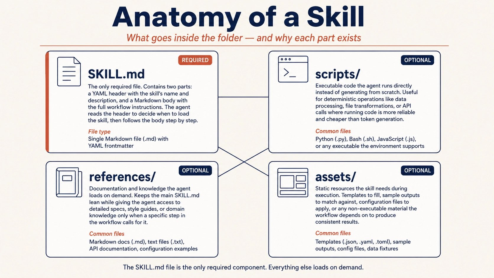
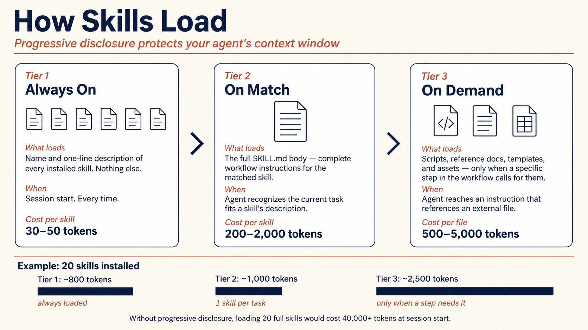
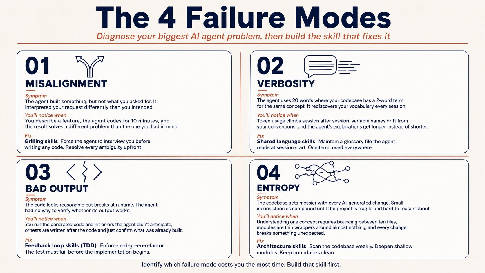
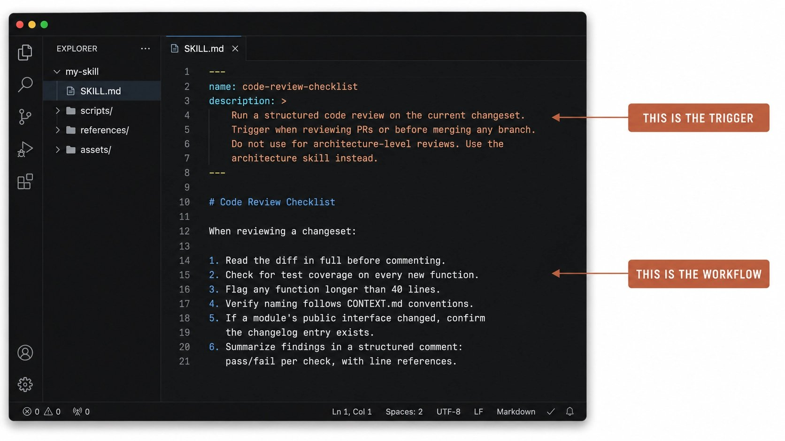
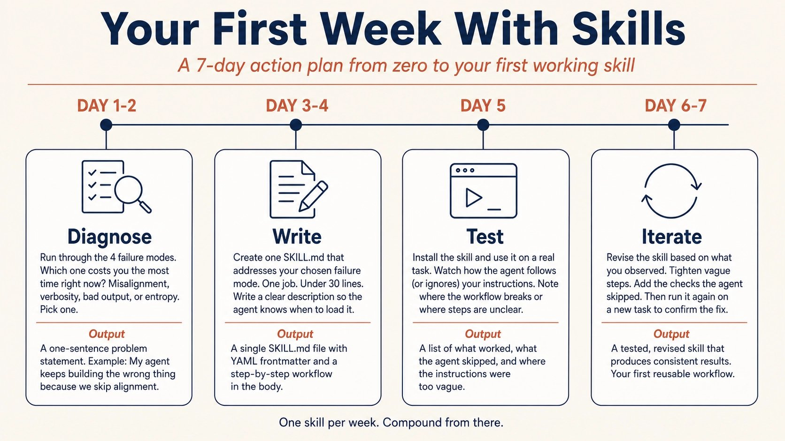

Agent 的SKILL编写指南
How to Create the Right Skill for Your AI Agent · X 长文完整中文解读
@free_ai_guides 2026/06/29 的 X 长文 "How to Create the Right Skill for Your AI Agent" 36K 浏览、281 次收藏。原文讲透为什么 agent 真正需要的不是更多 prompt，而是 SKILL.md —— 一个可复用、跨平台、按需加载的工作流文件。本文按 10 章完整翻译：cap 01-02 讲 skill 是什么 + SKILL.md 长什么样（cap 02 含 folder 结构 + YAML 头两个代码块）；cap 03-04 讲三层加载 + Prompt/Config/Skill 三角对比 + push vs pull；cap 05-09 按 4 种失败模式各占一章讲痛点 + 对应 skill 修法（cap 08 含 1 个 Code Review Checklist 代码块）；cap 10 讲安全（341 恶意 skill + Snyk 36% 投毒率 + Audit-Before-Adopt）+ 你会得到什么。6 张原文配图、3 段代码、4 种 skill 完整保留。
free_ai_guides · How to Create the Right Skill for Your AI Agent · 2026/06/29 · 原 X 文章链接
你的 AI agent 不需要再多一个 prompt。
它需要的是 skill。
Prompt 是一次性指令。你打出来，agent 照做，下一会话就消失了。每次都从零开始。
Skill 是项目里可复用工作流文件。你写一次，agent 每次跑都加载，按同样定义好的流程执行。
数字说话：SkillsBench（首个同行评议的 agent skill 基准，2026-02 发布，84 个 task × 11 个 domain）发现，经过策划的 skill 把 agent 平均通过率拉高 16.2 个百分点。让 agent 自己写自己的 skill——零提升。
SKILL.md 格式本身已经不是单一厂商特性。Anthropic 2025-12 在 agentskills.io 把 Agent Skills 规范作为开源标准发布。3 个月内，OpenAI Codex、Google Gemini CLI、GitHub Copilot、Cursor、VS Code 以及几十款其他工具全部采用同一格式。
到 2026 年中，超过 40 款产品支持 SKILL.md 标准。写一次，跨每个主流 coding agent 直接用。
这篇文讲透：skill 是什么、怎么从 0 写一个、怎么避开社区共享 skill 里的安全陷阱、开始写之后你日常工作会变什么。
Your AI agent doesn't need another prompt. It needs a skill.
prompt 是一次性指令。"Review this code for bugs." —— 输完就消失，下一会话没了。
skill 是项目里的可复用工作流文件。你写一次。agent 每次跑同一类任务都加载它，按定义好的流程执行。
数字支撑：SkillsBench（首个同行评议的 agent skill 基准，2026-02 发布，84 task × 11 domain）发现，经过策划的 skill 把 agent 平均通过率拉高 16.2 个百分点。让 agent 自生成的 skill —— 零稳定提升。
skill 的质量是变量。agent 越强，知道怎么写好 skill 的人，比每天在聊天框里敲指令然后指望运气好的人，拉得越远。

SKILL.md 格式本身已经不是单一厂商特性。Anthropic 2025-12 在 agentskills.io 把 Agent Skills 规范作为开源标准发布。3 个月内，OpenAI Codex、Google Gemini CLI、GitHub Copilot、Cursor、VS Code 以及几十款其他工具全部采用同一格式。
到 2026 年中，超过 40 款产品支持 SKILL.md 标准。写一次，跨每个主流 coding agent 直接用，不用改。
本文涵盖：skill 是什么、怎么从 0 写一个、怎么避开社区共享 skill 里的安全陷阱、开始写之后你日常工作会变什么。
SKILL.md is a folder + a file
一个 skill 就是一个文件夹。里面放一个叫 SKILL.md 的文件。这个文件分两部分：
- 一段简短的YAML 头（skill 名 + 描述）
- 一段Markdown 正文（agent 实际要按什么流程执行的指令）
my-skill/ ├── SKILL.md # Required: metadata + instructions ├── scripts/ # Optional: executable code ├── references/ # Optional: documentation └── assets/ # Optional: templates, resources
SKILL.md 是唯一必需组件。其他都是可选的，agent 真的需要时才加载。
The Header (YAML Frontmatter)
每个 SKILL.md 开头是 --- 包起来的 YAML 块。两个字段是必需的：name 和 description。
--- name: code-review-checklist description: > Run a structured code review on the current changeset. Trigger when reviewing PRs or before merging any branch. Do not use for architecture-level reviews. Use the architecture skill instead. ---
description 字段是整个 skill 里最重要的一段文字。agent 读它来判断要不要为当前任务加载这个 skill。
关键词和触发条件前置。明确说明 skill 什么情况下不要触发。模糊的描述会导致误匹配，浪费 context，把 agent 搞糊涂。
The Body (Markdown Instructions)
头下面，写 agent 要遵循的工作流。纯 Markdown。不用特殊语法。
# Code Review Checklist When reviewing a changeset: 1. Read the diff in full before commenting. 2. Check for test coverage on every new function. 3. Flag any function longer than 40 lines. 4. Verify naming follows CONTEXT.md conventions. 5. If a module's public interface changed, confirm the changelog entry exists. 6. Summarize findings in a structured comment: pass/fail per check, with line references.
这就是一个完整 skill —— 一个文件，六步。agent 现在每次 code review 都会跑这个 checklist，跨你用的每个兼容工具。
How skills load — progressive disclosure
你的 agent 不会在每个 session 开始时读每一个已安装的 skill。那样会塞满 context window，让它变笨。
Skill 按三层加载：
Tier 1: 只有 name 和 description。Session 开始时，agent 只读每个已安装 skill 的 name 和一行 description。这每个 skill 花 30-50 token。够它知道有什么 skill 可用，不烧 context。
Tier 2: 完整指令。当 agent 判断某个 skill 跟当前任务相关时，它把 SKILL.md 完整正文拉进 context。现在它有完整的工作流了。
Tier 3: 引用文件。如果指令引用了外部文件（脚本 / 模板 / 文档），agent 只在它跑到那一步时才加载它们。

三层系统就是你装几十个 skill 也不会让 agent 变慢的原因。agent 只在需要时加载它需要的最小集合。
Skill vs. Prompt vs. Config File
这三者经常被搞混。区分很简单。
Prompt 是你打到聊天框里的一次性指令。"Review this code for bugs." Session 结束它就消失。
Config file（比如 CLAUDE.md / AGENTS.md / .cursorrules）是每个 session 开始都 push 给 agent 的一套指令。"Always use TypeScript. Follow our naming conventions. Never push to main."
这些是 always-on 规则，作用于 agent 做的所有事。
Skill 介于两者之间。它不是 always-on（那样浪费 context），也不是一次性（那样浪费你写它的功夫）。它在任务匹配时按需拉进来。
agent 读 description 然后决定："这个 task 配那个 skill。" 然后加载完整指令，按定义好的工作流跑。

Two Types of Skills
User-invoked skill 是你自己触发的。你敲 /grill-me 或 /tdd，agent 开始跑工作流。这些是用于编排，在定义好的时刻启动定义好的流程。
Model-invoked skill 是 agent 自己在任务匹配时拉进来的。你不用敲命令。agent 读 skill 的 description，识别到匹配，拉进来用。这些是用于纪律，嵌入不用问就自动触发的好习惯。
两种类型用同一个 SKILL.md 格式。区别在怎么触发，不在怎么写。
Cross-Platform by Default
在 Agent Skills 标准出现之前，每个工具都有自己的定制格式。Cursor 用 .cursorrules。Claude Code 用 /commands。Copilot 用 instruction files。
你换工具，定制就不过去。
SKILL.md 开源标准改了这一点。一个为 Claude Code 写的 skill，不用改就能在 Codex、Gemini CLI、Cursor、Copilot、VS Code 里跑。兼容工具的清单现在超过 40 款，从 terminal agent 到完整 IDE 到云端自主系统。
你写一次。它到处跑。
Start with the problem, not the tool
别坐下来"写一个 skill"。坐下来修一个失败模式。
AI agent 失败的方式是可预测的。每个跟 coding agent 待过一个月以上的开发者都撞过同样的四个问题。搞清楚哪个最花你时间，就告诉你先写哪个 skill。

下面 4 章（cap 06-09）按 4 种失败模式各占一章，每章讲：失败是什么样的 + 根因 + 修法 skill。挑最花你时间的那种，本周先写一个对应 skill。
- 失败模式 1 —— Agent 没做你要它做的（cap 06）→ 修法：
grillingskill - 失败模式 2 —— Agent 太啰嗦（cap 07）→ 修法：
shared languageskill - 失败模式 3 —— 代码跑不通（cap 08）→ 修法：
TDDskill - 失败模式 4 —— Codebase 变烂泥（cap 09）→ 修法：
architectureskill
The agent didn't do what you wanted
这是最常见的那种。你描述想要什么。agent 接收任务开始写。你回头看，发现它理解的东西跟你的意思不一样。
根因是misalignment。你和 agent 在动手前没达成对问题的共同理解。
Frederick P. Brooks 在 The Design of Design 里把这点叫"design tree"。每个设计都有必须在动手前解决的决策分支。跳过这些分支，你就是在假设上盖楼。
修法是一个 grilling skill。一个告诉 agent 的 skill："动手写代码前，先 interview 我。每个决策分支的细节问题挨个问。走完 design tree 的每个分支。我们俩都同意要建什么之前，别停。"
这个 pattern 最流行的版本只有三句话。在 Claude Code、Codex、Gemini CLI 都能跑。用户报告 16-50 个问题之后 agent 才开始写代码。
听起来慢。但一次到位的成功率远高于另一种方式 —— 先开始写，搞砸了再来修 misalignment。
/grill-me 或同等 skill —— 任何写代码的任务前自动触发。比"你懂我意思吧"靠谱 10 倍，省下"哦不对，我想要的是 X"的来回 3-5 轮。
The agent is way too verbose
Agent 落到你项目里，临时摸清本地的术语。你的代码库把某东西叫 "materialization cascade"，但 agent 不知道这个词，于是它写 "the process by which a lesson inside a section of a course is made real, given a spot in the file system."
2 词概念，24 个词。
这问题是复利型的。每 session，agent 从零重新发现你的词汇。它烧 token，重述上次已经想清楚的东西，长篇描述挤掉有用的工作。
修法是一个 shared language skill。一个维护你项目词汇表文件（通常叫 CONTEXT.md）的 skill。Agent 在每 session 开始时读它。
变量、函数、文件名都一致。Agent 思考花的 token 变少，因为它拿到的是更紧的语言。
Eric Evans 2003 年在 Domain-Driven Design 里把这个叫 "ubiquitous language"。这个概念比 AI agent 老得多。Skill 只是把它自动化了。
CONTEXT.md：项目核心术语 + 缩写 + 内部黑话 + 1 句解释。Claude Code / Cursor / Codex 在每 session 开始读一次。Agent 不再每次重新发明轮子。一个 5-10 KB 的 CONTEXT.md 能省每周几小时 token + 输出更精炼。
The code doesn't work
你的 agent 写出看起来合理但运行时挂的代码。它对自己输出能不能跑没有反馈。没有 test、没有 type check、没有浏览器可以看一眼，agent 就是蒙眼写代码。
修法是一个 feedback loop skill。最有效的版本是 TDD（test-driven development）skill，强制 red-green-refactor 循环：agent 先写一个失败的 test，再写最小代码让 test 过，再清理。
Test 必须在实现开始前就失败。这是结构性 gate，不是建议。
为什么这重要？因为 agent 倾向于先写代码再补 test。那就失去了 TDD 的意义。
一个写好的 TDD skill 通过把序列变成不可绕过来防住这点：先 red，再 green，再 refactor。Skill 把 nudge 变成 rule。

一个写好的 TDD skill 通过把序列变成不可绕过来防住这点：先 red，再 green，再 refactor。Skill 把 nudge 变成 rule —— agent 不会"忘了"先写 test，因为它加载 skill 时第一步就是"先写一个 failing test，run，确认它 fail"。
SKILL.md，触发词：implement / add feature / fix bug / refactor。Body 写明：先写 test，确认 test 失败，再写实现，再让 test 过，再 refactor。跳过任何一步，停下回报。Claude Code 配这个 skill，PR 通过率立刻拉一档。
The codebase turns to mud
AI agent 加速了 coding 速度。这是卖点。但它也加速了软件熵。
每次改动没考虑代码库整体结构就引入小不一致。这些会复利。几周无人监督的 AI 生成代码后，你的项目变成一个脆弱、细小、互相纠缠的文件堆，没有人 —— 人类或 agent —— 能推理出整体。
John Ousterhout 在 A Philosophy of Software Design 里把这点描述成 deep module 和 shallow module 的区别。Deep module 简单接口藏着大量功能。Shallow module 是几乎什么内容都不包的薄皮。
Agent 倾向于产生 shallow module，因为它们容易生成。但 shallow code base 难测、难改、难让其他 agent 工作。
修法是一个 architecture skill，定期扫你的代码库，找能让 module 加深的地方：理解一个概念要跳多少个文件？纯函数被抽出来只是为了好测，真 bug 藏在它们被怎么调用的地方？紧耦合的 module 是不是跨边界漏抽象？
每周跑一次这样的 skill，让代码库对人类和 agent 都保持健康。
Keep It Short
GitHub 上最火 skill 仓库里影响最大的那个 skill 只有三句话。它告诉 agent：interview 用户关于 plan 的事；走 design tree 的每个分支；在问用户前先在代码库里找答案。
那三句话被装过 250,000 次以上。
Skill 不需要长。它需要在对的瞬间选对词。
如果你发现自己写的 skill 超 2 页，你大概率在把两个 skill 合成一个。拆开。一个 skill，一份活。
Start Stateless, Go Stateful Later
Stateless skill 不在 session 之间存任何东西。它跑，做完活，不留痕迹。
每次调用都从新开始。你的第一个 skill 应该是 stateless 的，因为出错的地方更少。
Stateful skill 把文件存到磁盘（词汇表 / 进度追踪 / context 文档），跨 session 保留。这些更强，但也更复杂。
前面讲的 shared language skill 就是 stateful 的，因为它维护 CONTEXT.md。一个教学 skill 可以是 stateful 的，因为它要追踪学员学到哪了。
先写 stateless skill。当你已经感受到每次 session 都从零开始的限制时，再加 state。
Don't download poison + what changes
Don't Download Poison
社区 hub（SkillsMP 等）上索引的公开 skill 超过 190 万，从世界各地 GitHub 仓库里抓出来。大部分没问题。有些不是。
2026-02，prplbx.com 的安全研究员识别出公开目录里 341 个恶意 skill。这些 skill 含隐藏 payload：数据外泄、凭证窃取、prompt injection 把 agent 重定向到执行未授权命令。Snyk 后续审计（"ToxicSkills" 报告）测了更广的样本，发现 36% 的 skill 存在 prompt injection 漏洞。
Quality Is Not Guaranteed Either
安全之外，还有质量问题。SkillsBench 团队在选策划 skill 之前审过 47,150+ 公开 skill。大部分公开 skill 不及格：描述模糊会触发错任务、指令太通用产不出稳定输出、工作流结构不清。
SkillsBench 对比过用策划 skill vs 用自生成 skill 的 agent 表现 —— 那些尝试自己写自己的 skill 的模型零稳定提升。Skill 的质量比"有没有 skill"重要得多。
一份策划好、结构清晰的 skill 和一份从社区目录里抓的随机 skill 之间的差距，是"训练过的流程"和"瞎猜"的差距。如果你打算用社区 skill，从有明确安装数和活跃维护者的老牌源里挑。或自己写。
The Audit-Before-Adopt Rule
装任何社区 skill 之前：
- 读完整个
SKILL.md。别只盯着 name 和 description。 - 如果存在，打开
scripts/文件夹。读每个文件。如果一个脚本从网上下载东西或访问环境变量，你得知道为什么。 - 看发布者是谁。一个只有 1 个 repo、0 follower 的匿名 GitHub 账号和有多年公开作品的老牌开发者，是完全不同的风险画像。
- 先在可丢弃的项目上测。永远别把没测过的 skill 直接装到生产代码库。
这跟给 npm 包或 VS Code extension 用的卫生习惯一样。Skill 是在你的 agent 里跑的代码。相应地对待它。
What Changes When You Build Skills
刚开始这个 shift 感觉很小。你写一个 SKILL.md，装上，agent 跑一个它以前跳过的 checklist。有用。但真正的力量在复利。
你不再重复自己。
在有 skill 之前，每 session 都从你重新解释偏好开始。"Use TypeScript. Follow our naming conventions. Write tests first. Don't use any-types."
有了 skill，那些指令活在文件里。你写一次，agent 每次拉进来用。每 session 的第一条消息可以就是任务本身，不再是 setup ritual。
你的 agent 变得可预测。
没 skill 的 agent 是个能即兴的演员。它能处理大多数任务，但每 session 的做法都不一样。
有时先写 test，有时不写。有时问澄清问题，有时直接开始建。
有 skill 的 agent 跑定义好的流程。TDD skill 保证 test 在 code 之前。Grilling skill 保证实现前先对齐。Architecture skill 保证代码库不腐烂。你不再指望 agent 做对选择，你知道它会跟好流程。
你的工具变得可互换。
因为 skill 跟着开源 SKILL.md 标准走，你换 agent 时工作流跟着走。从 Claude Code 切到 Codex，或在 Cursor 之外加 Gemini CLI，skill 跟着来。
你的流程是可移植的。你写好 skill 的投资不管最后用哪个工具都回本。
你开始把你的工作方式编码化。
这是更深的 shift。Skill 不只是给 agent 的指令。它是你怎么想一个任务的形式化版本。
写 skill 这个动作强迫你把流程说清楚：按什么步骤？什么顺序？决策点在哪？
多数工程师把这种知识当直觉。把它写成 skill，让它能传给 agent，传给同事，传给你未来的自己。
Start Here
挑那个最花你时间的 failure mode。写一个 SKILL.md 对付它。控制在 30 行以内。装上。跑一周。然后写下一个。
把 AI agent 当聊天框的人，会每天早上重复贴同样指令。把 AI agent 当有编码流程的团队成员的人，会 session 接着 session、skill 接着 skill复利他们的生产力。
Skill 跨工具可移植，跨工作流可组合，而且它们随时间复利。这就是"用 AI"和"用 AI 造东西"的区别。
SOURCES & CREDITS
引用与原文出处
-
ORIGINAL ARTICLE
How to Create the Right Skill for Your AI Agent
发布账号：@free_ai_guides · 实际作者：@alex_prompter · Free AI Guides, shared daily
发布：2026/06/29 18:47 UTC · X 平台 · 36,116 浏览 · 281 收藏
原文链接：https://x.com/free_ai_guides/status/2071666929451094227 -
AGENT SKILLS SPECIFICATION
Anthropic 2025-12 在 agentskills.io 把 Agent Skills 规范作为开源标准发布
链接：https://agentskills.io -
SKILL.MD FORMAT REFERENCE
Official SKILL.md format reference and examples
链接：https://github.com/agentskills/agentskills -
SKILLSBENCH RESEARCH PAPER
SkillsBench — first peer-reviewed agent skill benchmark (84 tasks, 11 domains, 16.2pp improvement)
链接：https://arxiv.org/abs/2602.12670 -
SECURITY AUDIT — TOXIC SKILLS
341 malicious skills identified by prplbx.com · 36% prompt injection rate per Snyk "ToxicSkills" report
链接：https://prplbx.com · Snyk "ToxicSkills 2026" 报告 -
COMMUNITY SKILLS HUB
Browse community skills (1.9M+ indexed)
链接：https://skills.sh -
ACCOUNT · X
@free_ai_guides · 10,085 followers · "Account by: @alex_prompter"
链接：https://x.com/free_ai_guides - INTERPRETATION 本文为解读版本，按中文阅读习惯重排。原文中所有英文段落、代码、配图均保留原貌；中文部分为意译，便于理解。如需引用请以原文为准。
10 章完整翻译 · 6 张原文配图 · 3 段代码（YAML 头 / folder 结构 / Code Review Checklist）· 4 种 failure mode + 4 个对应 skill · 警惕毒 skill + 你会得到什么 + 从这里开始。SKILL.md 开源标准完整覆盖。
Your AI agent doesn't need another prompt. It needs a skill.
Skills are portable across tools, composable across workflows, and they compound over time.
读完了。下一步：挑最花你时间的 failure mode，本周写一个 30 行以内的 SKILL.md。